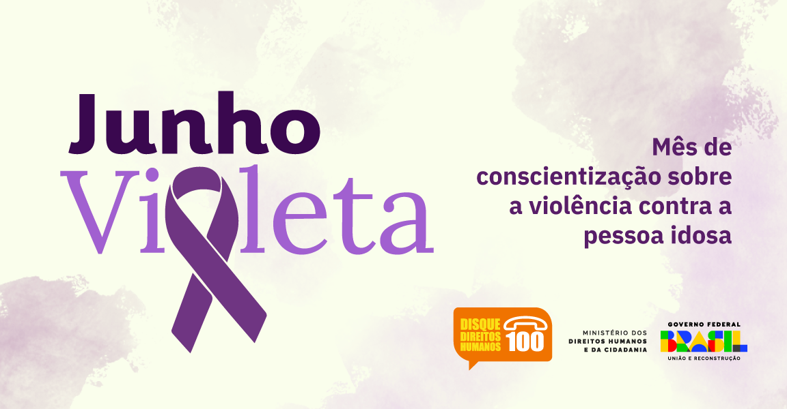

Cartaz Informativo
Crie um cartaz vibrante que ilustre os direitos humanos fundamentais. Inclua imagens de diversas pessoas e ícones como a balança da justiça e símbolos de paz.
Vídeo Curto
Desenvolva um vídeo emocionante mostrando pessoas ao redor do mundo exercendo seus direitos e refletindo sobre o que significa ter direitos humanos.
Assista ao Vídeo